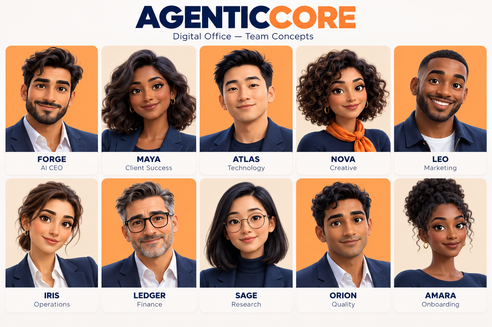

Starting from zero? Already running a business? Get a familiar coordinator and specialist AI roles to help you plan, create and organize the work—without building a team from scratch.
$0 · No card · No automatic renewalChoose up to two small deliverables, including a product or service launch brief. Scope and start date confirmed first.
One familiar contact.A team of specialist roles behind her.
AI character illustration
YOUR FIRST WEEK / FREE
Try the work. Then choose your office.
Start with something your business can use. Choose up to two small deliverables from different departments. One business, one trial, seven days from the agreed start date.
YOUR PRODUCT / YOUR NEXT STEPA clearer launch plan.
TRIAL DELIVERABLE · UP TO 2 PAGES
NEW / INCLUDED IN THE FREE TRIAL
Have a product or service idea? Start with a launch brief.
Tell us the idea, audience and market. Receive a short report that separates your supplied facts from assumptions, identifies questions to investigate and suggests practical next steps.
One idea and one market. Up to three public sources where useful, with gaps stated. A starting brief—not a full feasibility study or a promise of demand.
Choose your free trial deliverables +
Manually reviewed launch offer, subject to capacity. Trial work does not require a paid subscription. One consolidated correction round; no publishing, account connections, custom builds or paid media.
A REQUEST. A TEAM. A USEFUL RESULT.
Less explaining AI. More showing the work.
Explore a sample request and the kind of output to expect. These are illustrative workflows and example documents—not live client jobs.
Maya / Your office coordinatorWhatsApp-style example · connection planned
Preview a real sample page. Use your browser’s Print option to save it as a PDF.
YOU DON’T NEED TO ARRIVE WITH A COMPANY
“I have an idea.” That’s enough to begin.
A website, clear business information and a useful first offer can start with a conversation. We help turn the idea into a scoped work plan; you make the business decisions.
01 / MAKE IT CLEAR
Shape the idea.
Define the customer, the problem and the first offer. Identify assumptions before spending on a bigger launch.
02 / MAKE IT PRESENTABLE
Build your foundations.
Agree the website, brand materials, service information and enquiry process you need. New builds are separately scoped.
03 / MAKE IT REPEATABLE
Give the work a routine.
Plan content, documents, customer replies and administration around an agreed allowance and review schedule.
04 / KEEP YOU INFORMED
See what needs you.
Review deliverables and approvals in the workspace. WhatsApp updates and approved website automations are part of the planned connected office.
AI specialist roles support your business; they are not a guarantee of sales, instant delivery or a replacement for licensed professional advice.
The starting question is the same: what should your office help you achieve?
RECURRING MANAGED SUPPORT
Your digital office, coordinated for you.
Choose an agreed workload. Maya keeps the brief connected while specialist roles support content, documents, research, customer replies and routine business work.
Commission a scoped framework using your approved systems, branding and character identities. Agree integrations, account ownership and handover before the build.
Use WhatsApp as the planned front door for new requests, updates and delivery links. Your workspace provides a recorded view of briefs, files and accepted work.
Client-owned file storage and authorized website connections are part of the next integration phase. We will agree access, approval rules and where records are kept before connecting a workflow.
WhatsApp delivery, client cloud connections and event-driven invoice emails are not connected yet. Telegram is intended for internal coordination, rather than the client contact channel.

Maya coordinates. Specialists contribute. AI characters make responsibilities easier to understand; scope and business accountability remain explicit.
BEFORE YOU START
A few clear answers.
What can I do today?
Explore the sample work, request the limited seven-day trial, create an account and save a brief. Signed-in AI chat can help plan your office. Trial work starts after manual acceptance; automated execution and messaging connections are being built separately.
Do I need an existing business?
No. Start with your idea, audience and first goal. The free launch brief can help organize your next decisions. Websites, branding and a full launch are separately scoped work, not included in the free trial.
Will everything happen without my involvement?
You provide accurate business facts, choose priorities and approve decisions. The planned framework can automate specific authorized routines; work outside those rules needs review. Deadlines and capacity are agreed before acceptance.
Where are the packages and prices?
Our Services & Pricing page explains departments, allowances, managed support and company-owned builds. You can explore it without creating an account.
What happens after the free week?
The trial ends on its agreed date, without an automatic charge. You can discuss a paid work plan if the samples are useful. No card is required to request the trial.